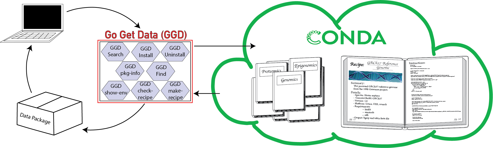

For a quick guide to start using ggd see: GGD Quick Start
Go Get Data (ggd) is a data management system that provides access to data package containing auto curated genomic data. ggd hosts data packages that contain information on how to extract and process scientific data, providing access to a growing number of scientific datasets without the hassle of finding, downloading, and processing them yourself. ggd leverages the conda package management system and the infrastructure of Bioconda to provide a fast and easy way retreive processed annotations and datasets, and provides a stable source of reproducibility. Using the ggd data management system allows any user to quickly access a desired dataset(s), and provides a platform upon which to cite data access and use by way of the ggd data package name and version.
ggd consists of:¶
- a repository of data recipes hosted on Github
- a command line interface (cli) to communicate with the ggd system
- a continually growing list of genomic recipes to provide quick and easy access to processed genomic data using the ggd cli tool
Capabilities¶
See GGD Quick Start to start using ggd with minimal information.
Use ggd to search, find, and install a data package hosted by ggd. The data package will be installed and processed
on your system, and give you ready-to-use data files. For additional information see Using GGD.

Example:¶
- Lets say you you need to align some sequence(s) to the human reference genome for an analysis you are doing. You will need download the reference genome from one of the sites that hosts it. You will need make sure it is the correct genome build, it is the right reference genome, and download it from the site. You will then need to sort and index the reference genome before you can use it. GGD simplifies this process by allowing you to search and install avaible processed genomic data packages using the ggd tool.
#******************************
#1. Search for a reference genome
# (See ggd search)
#******************************
$ ggd search -t reference genome
grch37-reference-genome-1000g-v1
Summary: GRCh37 reference genome from 1000 genomes
Species: Homo_sapiens
Genome Build: GRCh37
Keywords: ref, reference, fasta-file
Data Version: phase2_reference
To install run:
ggd install grch37-reference-genome-1000g-v1
grch37-reference-genome-ensembl-v1
Summary: The GRCh37 reference genome from Ensembl. Release 75. Primary Assembly file
Species: Homo_sapiens
Genome Build: GRCh37
Keywords: ref, reference, Ensembl, Release75
Data Version: Release-75
To install run:
ggd install grch37-reference-genome-ensembl-v1
grch38-reference-genome-ensembl-v1
Summary: The GRCh38 reference genome from Ensembl. Release 95. Primary Assembly file
Species: Homo_sapiens
Genome Build: GRCh38
Keywords: ref, reference, genome, Ensembl
Data Version: Release-95
To install run:
ggd install grch38-reference-genome-ensembl-v1
. . .
#******************************
#2. Install the grch38 reference genome
# (See ggd install)
#******************************
$ ggd install grch38-reference-genome-ensembl-v1
Looking for grch38-reference-genome-ensembl-v1 in the 'ggd-genomics' channel
grch38-reference-genome-ensembl-v1 exists in ggd-genomics
grch38-reference-genome-ensembl-v1 is not installed on your system
grch38-reference-genome-ensembl-v1 has not been installed by conda
Installing grch38-reference-genome-ensembl-v1
Solving environment:
## Package Plan ##
environment location: <conda root>
added / updated specs:
- grch38-reference-genome-ensembl-v1
The following packages will be downloaded:
package | build
------------------------------------|-----------------
grch38-reference-genome-ensembl-v1 | 0 6 KB ggd-genomics
The following NEW packages will be INSTALLED:
grch38-reference-genome-ensembl: 1-0 ggd-genomics
Downloading and Extracting Packages
grch38-reference-genome-ensembl-v1 | 6 KB | ###########################################################################################
Preparing transaction: done
Verifying transaction: done
Executing transaction: done
DONE
#******************************
#3. Identify the data enviroment variable or the file location
# (See ggd show-env or ggd list-files)
#******************************
$ ggd show-env
***************************
Active environment variables:
> $ggd_grch38_reference_genome-ensembl_v1_dir
> $ggd_grch38_reference_genome-ensembl_v1_file
***************************
$ ggd list-files grch38-reference-genome-ensembl-v1
<conda root>/ share/ggd/Homo_sapiens/GRCh38/grch38-reference-genome-ensembl-ensembl-v1/1/grch38.fa
<conda root>/share/ggd/Homo_sapiens/GRCh38/grch38-reference-genome-ensembl-ensembl-v1/1/grch38.fa.fai
#******************************
#4. Use files
# To use the downloaded data packages you can use the full file path from running `ggd list-files`
# or the environment variables created during installation
# For more info see the `Using installed data` tab.
#******************************
Available Data Packages¶
You can see and search for available packages using the Available packages page of the ggd documentation
If you have the ggd cli tool installed, you can use ggd search to search for available packages.
Contents: